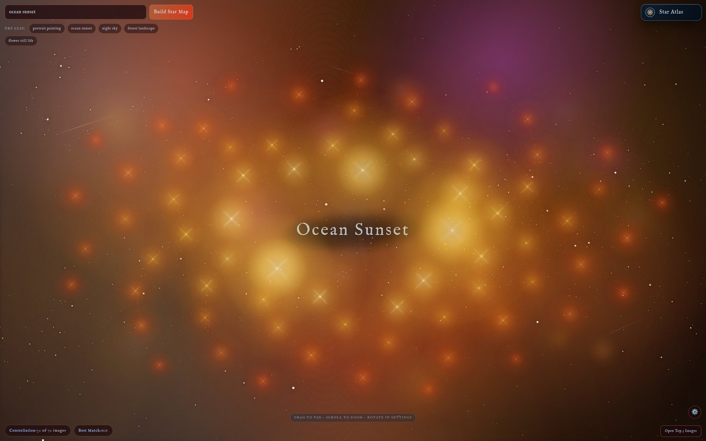

F1 · Star Atlas
Semantic search
A phrase becomes a constellation.
A natural-language query embeds through CLIP; the collection re-forms as a sky where the most relevant works are brightest, largest and most central. If the backend is down it falls back to local lexical ranking, so the scene never dies.
